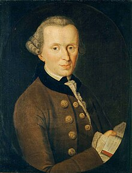
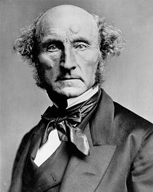

Inicio
Filosofía
Informática 3°A
Docente: Mercedes Olivera
Estudiante: Andrea Riva 5.455.386-3
Fecha de entrega: Jueves 7 de noviembre del 2024
Informática 3°A
Docente: Mercedes Olivera
Estudiante: Andrea Riva 5.455.386-3
Fecha de entrega: Jueves 7 de noviembre del 2024

La ética deontológica de Kant se basa en la idea de que la moralidad de una acción no depende de sus consecuencias, sino de si la acción se ajusta a ciertas normas o deberes.
-Imperativo Categórico: Este es el pilar de su ética. Según Kant, debemos actuar según máximas que puedan convertirse en leyes universales. Es decir, solo debemos hacer aquello que consideremos que todos deberían hacer en situaciones similares.
-Autonomía y Dignidad: Para Kant, los seres humanos tienen un valor intrínseco y deben ser tratados como fines en sí mismos, nunca como medios para un fin. Esto implica respetar la autonomía y la dignidad de cada persona.
-Moralidad y Razón: Kant creía que la moralidad está intrínsecamente vinculada a la razón. Según él, los principios morales son derivados de la razón pura y son universales y necesarios.

La ética utilitarista de John Stuart Mill se centra en la idea de que las acciones son moralmente correctas si maximizan la felicidad y el bienestar general.
-Principio de Utilidad: La base del utilitarismo de Mill es el principio de utilidad o “el mayor bien para el mayor número”. Las acciones son correctas si producen felicidad o placer y erróneas si producen dolor o sufrimiento.
-Felicidad como Fin Supremo: Mill sostiene que la felicidad, entendida como placer y ausencia de dolor, es el único fin intrínseco y deseable en sí mismo.
-Imparcialidad y Consecuencias: En la evaluación moral, todas las personas afectadas cuentan por igual. La moralidad de una acción se juzga por sus consecuencias para el bienestar general, no por intenciones o deberes inherentes.
-Calidad de Placeres: Mill distingue entre placeres superiores e inferiores, valorando más los placeres intelectuales y morales sobre los físicos. Sostiene que algunos placeres son más valiosos que otros debido a su calidad.
En esta primera instancia observaremos el dilema ético del tranvia propuesto por Judith Jarvis Thomson en 1976
En 2016, un grupo de investigadores del MIT Media Lab crearon ‘Moral Machine’, un juego de ética que planteaba a los participantes el tipo de cuestiones éticas que, dentro de poco, tendrán que resolver los vehículos sin conductor. Han reunido más de cuatro millones de respuestas y ahora tenemos los primeros resultados.
Acerca de la Máquina Moral
Desde los vehículos autónomos en vías públicas hasta los cohetes reutilizables no tripulados que aterrizan en buques autónomos, las máquinas inteligentes están apoyando o totalmente asumiendo actividades humanas cada vez más complejas a un ritmo creciente. La mayor autonomía dada a las máquinas inteligentes en estos papeles, puede llevar a situaciones en las que éstas tienen que tomar decisiones de manera autónoma, que afectan a la integridad física de humanos. Esto requiere, no sólo una comprensión más clara de cómo los seres humanos toman tales decisiones, sino también una comprensión más clara de cómo los seres humanos perciben la inteligencia de la máquina tomando tales decisiones.
Estudios científicos recientes han puesto este asunto en los medios de comunicación y el discurso público. Este sitio web pretende profundizar en la discusión proporcionando una plataforma para: 1) Construir una imagen multitudinaria (usando "crowdsourcing") de la opinión de los humanos sobre cómo las máquinas deben tomar decisiones cuando se enfrentan a dilemas morales; y 2) permitir la construcción y discusión de posibles escenarios con implicaciones morales por una multitud de individuos.
Wikipedia contributors. (s/f). John Stuart Mill
Jiménez, J. (2018, abril 23). El mayor estudio sobre la ética de los coches autónomos trae malas noticias para los ancianos (e incertidumbre sobre el futuro). Xataka.com; Xataka.
+ S. [@upso.sabermas]. (17 noviembre del 2021). ¿Sacrificarías una vida para salvar cinco? Youtube.
Wikipedia contributors. (s/f). Immanuel Kant.
Obra publicada con Licencia Creative Commons Reconocimiento Compartir igual 4.0